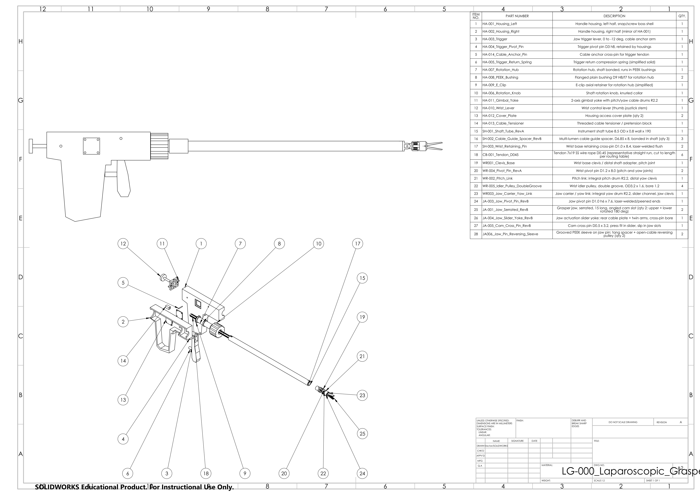

← Back to portfolio
Medical Devices / SolidWorks
Cable Driven Surgical Grasper: Parts List
Bill of materials for the 44 piece SolidWorks assembly, grouped by section: handle (16),
shaft (12), wrist (9), and jaws (7).
Wrist range
±90° pitch and yaw

Engineering drawing, click to open full size
Handle 16 pieces
| # | Part No. | Part | Material |
|---|
| 1 | HA-001 | Housing, left half | Polycarbonate |
| 2 | HA-002 | Housing, right half | Polycarbonate |
| 3 | HA-003 | Trigger | Acetal (POM) |
| 4 | HA-004 | Trigger pivot pin | 316L stainless |
| 5 | HA-014 | Cable anchor pin | 316L stainless |
| 6 | HA-005 | Trigger return spring | 304 stainless |
| 7 | HA-007 | Rotation hub | 316L stainless |
| 8 | HA-008 | Bushing #1 | PEEK |
| 9 | HA-008 | Bushing #2 | PEEK |
| 10 | HA-009 | E-clip | 304 stainless |
| 11 | HA-006 | Rotation knob | ABS/PC |
| 12 | HA-011 | Gimbal yoke | 316L stainless |
| 13 | HA-010 | Wrist lever | 316L stainless |
| 14 | HA-012 | Cover plate #1 | Polycarbonate |
| 15 | HA-012 | Cover plate #2 | Polycarbonate |
| 16 | HA-013 | Cable tensioner | 316L stainless |
Shaft 12 pieces
| # | Part No. | Part | Material |
|---|
| 17 | SH-001 | Shaft tube, 8.5 mm × 190 mm | 316L stainless |
| 18 | SH-002 | Cable guide spacer #1 | PEEK |
| 19 | SH-002 | Cable guide spacer #2 | PEEK |
| 20 | SH-002 | Cable guide spacer #3 | PEEK |
| 21 | SH-003 | Wrist retaining pin #1 | 316L stainless |
| 22 | SH-003 | Wrist retaining pin #2 | 316L stainless |
| 23 | CB-001 | Cable #1, wrist pitch | Stainless wire rope |
| 24 | CB-001 | Cable #2, wrist pitch | Stainless wire rope |
| 25 | CB-001 | Cable #3, wrist yaw | Stainless wire rope |
| 26 | CB-001 | Cable #4, wrist yaw | Stainless wire rope |
| 27 | CB-001 | Cable #5, jaw close | Stainless wire rope |
| 28 | CB-001 | Cable #6, jaw open | Stainless wire rope |
Wrist 9 pieces
| # | Part No. | Part | Material |
|---|
| 29 | WR-001 | Wrist base clevis | Titanium |
| 30 | WR-002 | Pitch link | Titanium |
| 31 | WR-003 | Jaw carrier / yaw link | Titanium |
| 32 | WR-004 | Pitch pivot pin | 316LVM stainless |
| 33 | WR-004 | Yaw pivot pin | 316LVM stainless |
| 34 | WR-005 | Idler pulley #1 | 17-4PH stainless |
| 35 | WR-005 | Idler pulley #2 | 17-4PH stainless |
| 36 | WR-005 | Idler pulley #3 | 17-4PH stainless |
| 37 | WR-005 | Idler pulley #4 | 17-4PH stainless |
Jaws 7 pieces
| # | Part No. | Part | Material |
|---|
| 38 | JA-001 | Serrated jaw, upper | 17-4PH stainless |
| 39 | JA-001 | Serrated jaw, lower | 17-4PH stainless |
| 40 | JA-003 | Jaw pivot pin | 17-4PH stainless |
| 41 | JA-004 | Jaw slider yoke | 17-4PH stainless |
| 42 | JA-005 | Cam cross-pin | 17-4PH stainless |
| 43 | JA-006 | Reversing sleeve #1 | PEEK |
| 44 | JA-006 | Reversing sleeve #2 | PEEK |
Want the CAD files or full drawings?
Request source files →